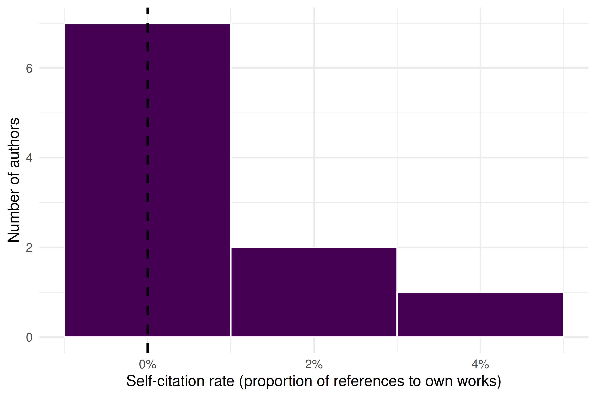

4 Ethics and Responsible Metrics
4.1 Learning objectives
After completing this chapter, you will be able to:
- Summarize the ten principles of the Leiden Manifesto and explain their implications for research evaluation
- Describe the key commitments of the San Francisco Declaration on Research Assessment (DORA)
- Identify common forms of metric gaming, including self-citation cartels, citation stacking, and salami slicing
- Evaluate when quantitative indicators are appropriate — and when they are not
- Compute and interpret author-level self-citation rates using OpenAlex data
- Apply a responsible-use framework when designing or reviewing bibliometric analyses
4.3 Conceptual background
Metrics shape behaviour. When a number is used to judge researchers, departments, or journals, people adjust their actions to improve that number — regardless of whether the number actually captures what it was meant to measure. This insight, often called Goodhart’s Law, is the intellectual foundation for the responsible metrics movement: “When a measure becomes a target, it ceases to be a good measure” (Goodhart 1984).
4.3.1 The Leiden Manifesto
In 2015, Hicks et al. (2015) published the Leiden Manifesto for Research Metrics — ten principles distilled from decades of experience in bibliometric practice. The principles are:
- Quantitative evaluation should support qualitative, expert assessment. Metrics should inform human judgement, never replace it.
- Measure performance against the research missions of the institution, group, or researcher. Not everyone pursues the same goals; evaluation criteria must reflect this.
- Protect excellence in locally relevant research. Research published in regional languages or addressing local problems must not be penalised for lower citation rates.
- Keep data collection and analytical processes open, transparent, and simple. Black-box indicators erode trust and prevent scrutiny.
- Allow those evaluated to verify data and analysis. Researchers should be able to inspect and challenge the data used to judge them.
- Account for variation by field in publication and citation practices. Citation rates in mathematics and molecular biology differ by an order of magnitude; raw counts cannot be compared across fields.
- Base assessment of individual researchers on a qualitative judgement of their portfolio. A single number (such as the h-index) cannot capture the breadth of a researcher’s contribution.
- Avoid misplaced concreteness and false precision. Three decimal places do not make a flawed indicator meaningful.
- Recognize the systemic effects of assessment and indicators. Indicators reshape the system they measure. If you reward publication volume, you incentivise salami slicing.
- Scrutinize indicators regularly and update them. The research landscape evolves; indicators must evolve with it.
4.3.2 The San Francisco Declaration (DORA)
The San Francisco Declaration on Research Assessment (American Society for Cell Biology 2012) emerged from the 2012 Annual Meeting of the American Society for Cell Biology. Its central demand is straightforward: do not use journal-level metrics — especially the Journal Impact Factor — as a proxy for the quality of individual research articles. DORA’s key commitments include:
- For funders and institutions: evaluate research on its own merits, not on the journal in which it was published. Use article-level metrics and qualitative indicators.
- For publishers: reduce emphasis on the Journal Impact Factor as a promotional tool. Make article-level metrics (downloads, citations, altmetrics) available.
- For researchers: challenge evaluation practices that rely on journal-based metrics. When serving on hiring or promotion committees, assess the content of papers, not where they appeared.
As of 2026, DORA has been signed by over 3,000 organisations and 20,000 individuals. Many major funders — including the European Commission, Wellcome Trust, and the Dutch Research Council (NWO) — have formally adopted DORA principles.
4.3.3 The Metric Tide
The UK’s independent review of metrics in research assessment, The Metric Tide (Wilsdon et al. 2015), reinforced these principles with a systematic evidence base. The report concluded that no metric can substitute for expert peer review, and recommended that the UK research system adopt a framework of “responsible metrics” built on five dimensions: robustness, humility, transparency, diversity, and reflexivity.
4.3.4 Goodhart’s Law in practice
When metrics are attached to career consequences, the incentive to game them becomes powerful (Goodhart 1984). Common forms of metric manipulation include:
- Self-citation inflation: authors systematically cite their own prior work to boost citation counts, even when those citations are not intellectually necessary.
- Citation cartels: informal agreements among groups of authors or journals to cite each other’s work, inflating citation counts reciprocally.
- Citation stacking: journals encourage or require authors to add citations to recently published articles in the same journal, artificially increasing the Impact Factor.
- Salami slicing: splitting a single study into the maximum number of “least publishable units” to inflate publication counts.
These practices are not merely hypothetical. Clarivate has repeatedly suspended journals from the Journal Citation Reports for citation stacking, and several high-profile cases of self-citation manipulation have led to editorial sanctions.
4.3.5 Publish or perish
The systemic root of metric gaming is the “publish or perish” culture that dominates academic career structures worldwide. When hiring, promotion, and tenure decisions are driven by publication volume and citation counts, researchers face relentless pressure to produce more papers, chase high-impact journals, and avoid risky long-term projects. The consequences include:
- Reduced risk-taking: researchers avoid novel or interdisciplinary questions that might not produce quick, high-citation publications.
- Replication crisis: pressure to publish positive results contributes to publication bias and irreproducible findings.
- Mental health harms: the relentless pressure to produce has been linked to elevated rates of anxiety, burnout, and attrition in academia.
- Erosion of research quality: when volume is rewarded over substance, the incentive structure favours quantity at the expense of depth and rigour.
These dynamics make the responsible use of metrics not merely a technical concern but an ethical imperative.
4.4 Worked example
We now demonstrate a practical analysis: computing self-citation rates for a sample of researchers in the field of scientometrics. This illustrates how OpenAlex data can be used to flag potential self-citation inflation — and the care required to interpret such analysis responsibly.
4.4.2 Fetching works and computing self-citations
For each author, we retrieve a sample of their recent works and examine how many of the citations come from the author’s own papers. OpenAlex provides cited_by_count at the work level and allows us to query an author’s works directly.
# For a manageable demonstration, pick 10 authors
authors_sample <- authors |>
slice_sample(n = min(10, nrow(authors)))
# Function to estimate self-citation rate for one author
estimate_self_citation <- function(author_id, author_name) {
# Fetch up to 50 recent works by this author
works <- tryCatch(
oa_fetch(
entity = "works",
author.id = author_id,
from_publication_date = "2018-01-01",
options = list(sample = 50, seed = 42)
),
error = function(e) tibble()
)
if (is.null(works) || nrow(works) == 0) {
return(tibble(
author_id = author_id,
author_name = author_name,
n_works = 0L,
total_citations = NA_integer_,
self_citations = NA_integer_,
self_cite_rate = NA_real_
))
}
# Count references that point to the same author's works
# We look at the referenced_works and check which are by the same author
total_cites <- sum(works$cited_by_count, na.rm = TRUE)
# For self-citation, we check which of the works' referenced_works
# are also in the author's own works list
own_work_ids <- works$id
self_cite_count <- works |>
pull(referenced_works) |>
map_int(~ sum(.x %in% own_work_ids, na.rm = TRUE))
tibble(
author_id = author_id,
author_name = author_name,
n_works = nrow(works),
total_references = sum(map_int(works$referenced_works, length)),
self_references = sum(self_cite_count),
self_cite_rate = if_else(
sum(map_int(works$referenced_works, length)) > 0,
sum(self_cite_count) / sum(map_int(works$referenced_works, length)),
NA_real_
)
)
}
self_cite_results <- map2_dfr(
authors_sample$id,
authors_sample$display_name,
estimate_self_citation
)4.4.3 Summarizing results
self_cite_results |>
filter(!is.na(self_cite_rate)) |>
arrange(desc(self_cite_rate)) |>
mutate(self_cite_rate = scales::percent(self_cite_rate, accuracy = 0.1)) |>
gt() |>
tab_header(
title = "Self-citation rates among sampled scientometrics authors",
subtitle = "Based on references in up to 50 recent works per author"
) |>
cols_label(
author_name = "Author",
n_works = "Works sampled",
total_references = "Total references",
self_references = "Self-references",
self_cite_rate = "Self-citation rate"
) |>
cols_hide(author_id)| Self-citation rates among sampled scientometrics authors | ||||
| Based on references in up to 50 recent works per author | ||||
| Author | Works sampled | Total references | Self-references | Self-citation rate |
|---|---|---|---|---|
| Raf Guns | 50 | 799 | 39 | 4.9% |
| Shelley Stall | 50 | 274 | 8 | 2.9% |
| Rickard Danell | 11 | 381 | 4 | 1.0% |
| Daniël Lakens | 50 | 1937 | 11 | 0.6% |
| James L. Wood | 5 | 25 | 0 | 0.0% |
| Hans‐Dieter Daniel | 19 | 406 | 0 | 0.0% |
| Raymond Hubbard | 3 | 107 | 0 | 0.0% |
| Robin Lockerby | 5 | 5 | 0 | 0.0% |
| Manghi P. | 40 | 40 | 0 | 0.0% |
| C. R. Karisiddappa | 2 | 2 | 0 | 0.0% |
4.4.4 Visualization
self_cite_clean <- self_cite_results |>
filter(!is.na(self_cite_rate))
if (nrow(self_cite_clean) > 0) {
ggplot(self_cite_clean, aes(x = self_cite_rate)) +
geom_histogram(
binwidth = 0.02,
fill = palette_sci(1),
colour = "white"
) +
geom_vline(
xintercept = median(self_cite_clean$self_cite_rate, na.rm = TRUE),
linetype = "dashed", linewidth = 0.8
) +
scale_x_continuous(labels = scales::percent_format()) +
labs(
x = "Self-citation rate (proportion of references to own works)",
y = "Number of authors"
) +
theme_sci()
}
Figure 4.1: Distribution of self-citation rates across sampled scientometrics authors. The dashed line marks the sample median.
4.5 Diagnostics and interpretation
Self-citation rates vary enormously across disciplines, career stages, and research specialities. When interpreting these results, keep the following in mind:
- Baseline rates differ by field. In small, specialised fields, self-citation is often necessary because few other researchers work on the same topic. Self-citation rates of 15–25% are common in niche subfields and do not, by themselves, indicate manipulation.
- Career stage matters. Senior researchers with large publication portfolios naturally accumulate more self-citations simply because they have more prior work to build on.
- Our estimate is a lower bound. We only count self-references to works that appear in the author’s sampled works from OpenAlex. Works outside our sample window (before 2018) or works not indexed by OpenAlex are missed, so the true self-citation rate is likely higher.
- Context is essential. A self-citation rate of 30% might be perfectly reasonable for a researcher building a coherent long-term programme, while a rate of 10% could still be problematic if those citations are strategically placed to inflate a particular metric.
- Never use self-citation rates alone to accuse individuals of misconduct. As the Leiden Manifesto insists, quantitative indicators must support — not replace — qualitative judgement (Hicks et al. 2015).
4.7 Limitations and responsible use
- Self-citation analysis is not misconduct detection. High self-citation rates have many legitimate explanations. Presenting a self-citation analysis as evidence of gaming without qualitative context is itself a form of metric misuse.
- Coverage gaps matter. OpenAlex does not index all scholarly works. Authors who publish in venues not well covered by OpenAlex will have incomplete reference lists, biasing self-citation estimates.
- Author disambiguation is imperfect. OpenAlex uses algorithmic author disambiguation. Common names may be conflated (merging two people into one profile) or split (one person appearing as multiple profiles), distorting individual-level statistics.
- Snapshot bias. Our analysis uses a sample of works from a particular time window. Conclusions should not be generalised beyond that window without further analysis.
- The Leiden Manifesto applies here too. Every principle in 4.3 applies to our own analysis. We must be transparent about methods, allow those evaluated to verify data, and avoid false precision (Hicks et al. 2015).
4.9 Common pitfalls
- Equating self-citation with misconduct. Self-citation is a normal part of scientific writing. Only excessive, strategically motivated self-citation is problematic — and even then, the boundary is context-dependent.
- Using the Journal Impact Factor to judge individual articles. This is precisely what DORA warns against. A journal’s average citation rate says nothing about any single paper in that journal (American Society for Cell Biology 2012).
- Ignoring field differences when comparing metrics. A citation count of 20 is exceptional in mathematics but unremarkable in biomedical research. Any cross-field comparison requires field normalisation (Waltman 2016).
- Treating indicators as objective truth. All bibliometric indicators are constructed measures with specific assumptions, coverage limitations, and known biases. Present them as approximations, not facts.
- Forgetting Goodhart’s Law. If you propose a new indicator for evaluation purposes, consider how rational actors will respond to being measured by it. Every metric creates incentives, and those incentives may not align with the goals of good research (Goodhart 1984).
4.10 Exercises
Leiden Manifesto audit. Select a recent hiring or promotion policy document from a university (many are publicly available). Evaluate it against all ten Leiden Manifesto principles. Which principles does it satisfy? Which does it violate? Write a one-page assessment.
Self-citation across fields. Modify the worked example to compare self-citation rates between two different research fields (e.g., “bibliometrics” and “genomics”). Do you observe different baseline self-citation rates? What might explain the difference?
DORA compliance check. Visit the DORA website (sfdora.org) and identify three major funders that have signed the declaration. For each, find their current grant evaluation criteria and assess whether their stated practices are consistent with DORA commitments.
Goodhart’s Law thought experiment. Propose a new indicator for measuring research quality that is not currently in wide use. Then, write a brief analysis of how researchers might game this indicator if it were adopted for promotion decisions. (Hint: think about both the numerator and denominator of any ratio-based metric.)
4.11 Solutions
Solutions are provided in 2.11.
4.12 Further reading
- Hicks et al. (2015) — The Leiden Manifesto for Research Metrics. The single most important reference on responsible use of bibliometric indicators.
- American Society for Cell Biology (2012) — The San Francisco Declaration on Research Assessment. The landmark declaration against using journal-level metrics to evaluate individual researchers.
- Wilsdon et al. (2015) — The Metric Tide. A comprehensive UK government review of the role of metrics in research assessment, proposing a framework of responsible metrics.
- Goodhart (1984) — Goodhart’s original articulation of the principle that a measure ceases to be useful when it becomes a target.
- Waltman (2016) — A thorough review of citation impact indicators, including their known biases and appropriate uses.
- Merton (1968) — The Matthew Effect in science; describes how advantage accumulates, a dynamic that citation metrics can reinforce.
- Garfield (1955) — The foundational paper on citation indexing. Essential for understanding the origins of the system we now critique.
4.13 Session info
#> R version 4.4.1 (2024-06-14)
#> Platform: x86_64-pc-linux-gnu
#> Running under: Ubuntu 24.04.4 LTS
#>
#> Matrix products: default
#> BLAS: /usr/lib/x86_64-linux-gnu/openblas-pthread/libblas.so.3
#> LAPACK: /usr/lib/x86_64-linux-gnu/openblas-pthread/libopenblasp-r0.3.26.so; LAPACK version 3.12.0
#>
#> locale:
#> [1] LC_CTYPE=C.UTF-8 LC_NUMERIC=C LC_TIME=C.UTF-8
#> [4] LC_COLLATE=C.UTF-8 LC_MONETARY=C.UTF-8 LC_MESSAGES=C.UTF-8
#> [7] LC_PAPER=C.UTF-8 LC_NAME=C LC_ADDRESS=C
#> [10] LC_TELEPHONE=C LC_MEASUREMENT=C.UTF-8 LC_IDENTIFICATION=C
#>
#> time zone: UTC
#> tzcode source: system (glibc)
#>
#> attached base packages:
#> [1] stats graphics grDevices utils datasets methods base
#>
#> other attached packages:
#> [1] gt_1.3.0 tidytext_0.4.3 glue_1.8.1 openalexR_3.0.1
#> [5] lubridate_1.9.5 forcats_1.0.1 stringr_1.6.0 dplyr_1.2.1
#> [9] purrr_1.2.2 readr_2.2.0 tidyr_1.3.2 tibble_3.3.1
#> [13] ggplot2_4.0.3 tidyverse_2.0.0
#>
#> loaded via a namespace (and not attached):
#> [1] gtable_0.3.6 xfun_0.57 bslib_0.11.0 lattice_0.22-6
#> [5] tzdb_0.5.0 vctrs_0.7.3 tools_4.4.1 generics_0.1.4
#> [9] curl_7.1.0 janeaustenr_1.0.0 tokenizers_0.3.0 pkgconfig_2.0.3
#> [13] Matrix_1.7-0 RColorBrewer_1.1-3 S7_0.2.2 lifecycle_1.0.5
#> [17] compiler_4.4.1 farver_2.1.2 codetools_0.2-20 SnowballC_0.7.1
#> [21] htmltools_0.5.9 sass_0.4.10 yaml_2.3.12 pillar_1.11.1
#> [25] jquerylib_0.1.4 cachem_1.1.0 viridis_0.6.5 stopwords_2.3
#> [29] tidyselect_1.2.1 digest_0.6.39 stringi_1.8.7 bookdown_0.46
#> [33] labeling_0.4.3 rprojroot_2.1.1 fastmap_1.2.0 grid_4.4.1
#> [37] here_1.0.2 cli_3.6.6 magrittr_2.0.5 dichromat_2.0-0.1
#> [41] utf8_1.2.6 withr_3.0.2 scales_1.4.0 timechange_0.4.0
#> [45] rmarkdown_2.31 httr_1.4.8 otel_0.2.0 gridExtra_2.3
#> [49] hms_1.1.4 memoise_2.0.1 evaluate_1.0.5 knitr_1.51
#> [53] viridisLite_0.4.3 rlang_1.2.0 Rcpp_1.1.1-1.1 downlit_0.4.5
#> [57] brand.yml_0.1.0 xml2_1.5.2 rstudioapi_0.18.0 jsonlite_2.0.0
#> [61] R6_2.6.1 fs_2.1.0